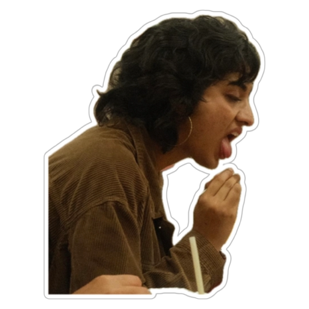

Wikipedia
The Free Encyclopedia
Gurleen Romana
Contents
- Early life
- 9/11 Incident
- Blasphemy
- Dissociation
- Substance Abuse
- Career
- Controversial Thoughts
- Gender Chaos
- Legacy
A Biopic of Her Life
Based on true memes (that she sent herself)
